8 线性数据结构
8.1 处理常见数据结构
8.1.1 什么是算法？大O记法（Big O Notation）是如何工作的？
在你的设备上运行的每个计算机程序都有一组特定的指令，这些指令按特定顺序执行以完成任务。
该任务可能是对一组数字进行排序、修改图像、跟踪库存，甚至是运行你最喜欢的视频游戏。
这就是算法发挥作用的地方。算法是用于解决问题或执行任务的一组明确的指令。
你可以把算法看作是“食谱”。当你做饭时，食谱会列出你所需的所有食材，并提供准备菜肴的分步说明。
同样，你可以把算法看作是“食谱”，它精确地告诉计算机应该做什么以及如何做。
算法有两个关键特征：
- 它们不能无限期地继续。它们必须在有限的步骤内完成。
- 每个步骤都必须精确且明确。
它们可能有零个、一个或多个输入，并生成一个或多个输出。
算法的步骤独立于任何编程语言。
但要让它们真正在计算机上运行，你需要用编程语言（如 Python 或 JavaScript）来实现它们。
如果一个算法是正确的，那么对于任何有效输入，其输出都应该与预期输出匹配。
除了正确性，算法还应该高效。
算法的效率可以通过它们运行所需的时间以及完成任务所需的内存空间来衡量。
了解算法的效率非常重要，因为它让你了解随着输入规模的增长，算法的性能会如何变化。
例如，对 15 个整数进行排序与对 100 万个整数进行排序是不一样的。
随着过程规模和复杂性的增长，如果算法效率不够高，你最终可能会得到一个非常慢的计算机程序，甚至可能导致整个系统崩溃。
这就是为什么开发和选择尽可能高效的算法非常重要。
这就是大 O 表示法（Big O notation）变得非常重要的地方。
大 O 表示法描述了随着输入规模的增加，算法的最坏情况性能或增长速率。
算法的增长速率是指随着输入规模的增长，它所需的资源如何增加。
大 O 表示法关注最坏情况性能，因为了解即使在最坏情况下算法的效率如何非常重要，无论输入如何。
回到我们的排序示例，直观上对 100 万个整数进行排序比对 15 个整数进行排序需要更多的时间和资源。
但要多多少呢？
这实际上取决于你选择用来排序的算法。
大 O 表示法不会给出一个精确的数字来描述算法的效率，但它会根据算法执行的操作数，让你了解随着输入规模的增长，算法的扩展性如何。
在大 O 表示法中，我们通常用字母 n 表示输入规模。例如，如果输入是一个列表，n 将表示该列表中的元素数量。
在根据操作数确定算法的时间复杂度时，不考虑常数因子和低阶项。因为随着 n 的规模增长，这些较小项在执行的总操作数中的影响会变得越来越小。
将主导算法整体行为的将是 n 的最高阶项，即输入规模。
例如，如果一个算法执行 7n + 20 个操作才能完成，随着 n 的增长，常数 20 对最终结果的影响会变得越来越小。项 7n 将倾向于主导，这将定义算法的整体行为和效率。
另一个例子是一个执行 20n² + 15n + 7 个操作才能完成的算法。随着 n 的增长，项 20n² 将倾向于主导，因此该算法将具有二次时间复杂度，因为主导项是 n²。
二次时间复杂度是算法世界中你可能遇到的许多不同类型的时间复杂度之一。
让我们了解一些最常见的类型。
O(1) 被称为“常数时间复杂度”。当算法具有常数时间复杂度时，无论输入规模如何，它运行所需的时间都相同。
例如，检查一个数字是偶数还是奇数总是需要相同的时间，无论数字本身是多少。
示例代码
def check_even_or_odd(number):
if number % 2 == 0:
return 'Even'
else:
return 'Odd'O(log n) 被称为“对数时间复杂度”。这意味着算法所需的时间随着输入规模的增长而缓慢增加。这在问题规模反复以恒定分数减少的问题中很常见。
例如，一种名为二分查找（Binary Search）的流行搜索算法具有 O(log n) 的最坏情况时间复杂度。这是因为它在每次比较中都会消除一半的剩余元素，这使得它整体上更高效。
O(n) 被称为“线性时间复杂度”。具有这种时间复杂度的算法的运行时间与输入规模成正比地增加。
例如，一个遍历列表所有元素的 for 循环，随着列表元素数量的增加，它将执行更多的迭代。如果列表大小翻倍，操作数量也将大致翻倍。
示例代码
for grade in grades: # grades 是一个列表。
print(grade)O(n log n) 被称为“对数线性时间复杂度”。这是高效排序算法（如归并排序（Merge Sort）和快速排序（Quick Sort））的常见时间复杂度。
O(n²) 被称为“二次时间复杂度”。这些算法的运行时间相对于输入规模呈二次方增加，这对于现实世界的问题通常效率不高。
嵌套循环是二次时间复杂度的一个常见例子。内层循环将对外层循环的每个 n 次迭代执行 n 次迭代，从而导致 n 的平方次迭代。
示例代码
for i in range(n):
for j in range(n):
print("Hello, World!")其他时间复杂度包括“指数时间复杂度”，表示为 O(2^n)，以及“阶乘时间复杂度”，表示为 O(n!)。两者在现实场景中效率都不高。
在这张图中，你可以比较代表最常见时间复杂度的数学函数的增长。将 x 轴（水平）视为输入规模，将 y 轴（垂直）视为算法的运行时间。
你可以看到二次时间复杂度（O(n²)）（黄色）比其他增长快得多，而常数时间复杂度（O(1)）（红色）保持不变，即使输入变大也是如此。
比较时间复杂度的图表
太好了。到目前为止，你已经从时间要求的角度了解了大 O 表示法，但这个表示法也可以应用于空间要求的上下文。
在这种情况下，它描述了随着输入规模的增长，算法所需的内存空间如何增长。
具有“常数空间复杂度” O(1) 的算法总是需要恒定量的内存空间，即使输入变大也是如此。
一个例子是只在内存中创建和存储几个变量的算法。
相比之下，具有“线性空间复杂度” O(n) 的算法所需的空间随着输入规模的增长而成比例地增加。
一个例子是创建和存储长度为 n 的列表副本的算法。
最后，具有“二次空间复杂度” O(n²) 的算法的空间需求随着输入规模的增长而呈二次方增加。
一个例子是创建一个二维矩阵，其中维度由输入规模确定，存储所有可能的对。
算法是计算机程序的构建块，而大 O 表示法是一个强大的框架，用于分析它们的效率，基于它们在最坏情况下的时间和空间要求如何随着输入规模的增长而扩展。了解它们的效率对于开发在现实场景中高效运行的软件非常重要。
8.1.2 什么是有效的问题解决技巧？应如何应对算法类挑战？
在学习的过程中，你应该致力于培养强大的解决问题的能力。这些核心技能对于解决日常工作中的实际问题至关重要。
解决算法挑战是练习的绝佳方式。它需要一种分析性的思维方式，能够将问题分解为其核心组件，并找到一种能高效生成正确输出的解决方案。
但你该从哪里开始呢？
你可以使用几种问题解决技术来开始应对这些挑战。
作为一个例子，我们将在 Python 中反转一个字符串。
这是挑战内容：
“给定一个字符串，编写一个算法，返回一个字符顺序相反的新字符串。”
当你遇到这种类型的问题时，你应该做的第一件事是多次阅读描述，以确保你理解了它的意思。如果你跳过这一步或读得太快，你可能会错过关键信息。
然后，一旦你熟悉了问题，开始将其分解为其核心组件。
问问自己：
“输入是什么？”
“期望的输出是什么？”
“我如何将输入转换为期望的输出？”
在这个问题中，你可以确定输入是一个字符串，因为挑战以“给定一个字符串…”开头。
输出是“一个字符顺序相反的新字符串。”
所以你需要取原始字符串并将其反转。
这种初步分析一开始可能看起来有点重复，但它对于确保你完全理解需求非常有帮助。
然后，你应该开始思考你将开发的算法将如何将输入转换为输出。
在这个规划和分析阶段，使用伪代码（Pseudocode）来规划必要的步骤是很常见的。
伪代码是算法逻辑的高级描述，本质上是通用的，不基于任何特定的编程语言。
伪代码不像实际代码那么正式，因为它仅用于人类阅读。它应该是一目了然的。它的主要目的是给出将执行的步骤序列的清晰思路。
伪代码通常是通用的书面语言（如英语）与编程结构（如 IF、ELSE、FOR 和 WHILE）的混合。
这是你为解决“反转字符串”挑战可能编写的伪代码示例。
示例代码
GET original_string
SET reversed_string = ""
FOR EACH character IN original_string:
ADD character TO THE BEGINNING OF reversed_string
DISPLAY reversed_string请注意这些步骤是如何以易于理解的方式概述的。单词和结构本身可能因你遵循的标准而异。
如果你愿意，你可以使用多种编程语言实现这些步骤，遵循相同的逻辑，因为伪代码独立于编程语言。
到这一点，你可能已经意识到这个问题可以用许多不同的方式解决。这不是反转字符串的唯一方法。
但请记住，选择正确的算法很重要。
在之前的课程中，你了解了算法复杂度以及为什么选择在时间和空间上高效的算法很重要。
这就是作为开发人员你将发挥关键作用的地方。你需要选择最高效的算法来解决挑战。
思考不同的可用算法是你应该练习的一项重要问题解决技能。花点时间问问自己，你在伪代码中提出的解决方案是否是最好的。
例如，有许多不同的算法用于排序元素，但其中一些比其他的更高效。例如，冒泡排序（Bubble sort）对于排序大列表非常低效，而快速排序（Quick Sort）通常更高效。
对于我们的“反转字符串”挑战，我们可以使用以下任一方法，假设我们计划在 Python 中实现我们的算法：
- 使用扩展切片语法 [::-1] 来获取新的反转字符串。
- 从左到右循环遍历字符，并将新字符添加到新字符串的开头。
- 调用 reversed() 函数来获取一个包含所有字符按相反顺序的迭代器，然后调用 ““.join() 方法将它们连接回一个字符串。
你应该使用哪一个？这是你的选择。
基于你的知识和经验做出这些决定会对你的应用程序的最终性能产生巨大影响。考虑不同的方法、它们的效率、影响和实现。
问问自己：
“我将如何处理这个问题？”
“我将使用什么数据结构？”
“我选择的数据结构是针对当前问题最高效的数据结构吗？”
“我是否涵盖了所有可能的边缘情况？”
边缘情况（Edge cases）是特定的有效输入或条件，发生在算法应处理的边界上。
例如，在“反转字符串”挑战中，边缘情况将是采用空字符串作为输入。你是否正确处理了它？如果没有，请考虑处理此边缘情况的最佳方式，并将其添加到你的伪代码中。
然后，一旦你对你的计划感到满意，你就可以进入实施阶段。在这个阶段，你将在编程语言中实现你的算法。
在构建你的程序时，你应该编写模块化代码，使其易于阅读和理解。
基于你当前的知识使用编程语言的工具。一些编程语言包括针对常见问题和任务的内置解决方案。如果可能，请使用它们。
为了保持一致，请遵循你选择的编程语言的最佳实践。
在编写代码时对其进行测试，并确保你适当地处理了边缘情况。
一旦你的解决方案实现，检查它是否对所有示例都正确工作，并可能重构你的代码以使其更清晰或更简单。
回到你的解决方案非常重要。开发不一定是一个线性的、循序渐进的过程。你总是可以回到你的代码，并使用你的批判性思维技能来改进它。
这些是你在应对算法挑战时可以遵循的一些常见问题解决技术。如果你持续练习，你会逐渐发展你的问题解决技能。
8.1.3 动态数组与静态数组有什么不同？?
数组是计算机科学中一种基础的数据结构。所有的数组都存储有序的数据集合，但根据其类型的不同，它们在底层的工作方式可能不同。
它们底层的行为会对程序的效率产生重要影响，因此让我们来了解一下动态数组和静态数组以及它们的区别，这样你就可以为你的程序选择最高效的一种。
我们将从静态数组开始。
静态数组具有固定的大小。它们将元素存储在相邻的内存位置中。
静态数组的大小是在数组初始化时确定的。一旦分配了那个特定的内存块，它就是固定的，在程序运行时无法更改。这是静态数组的一个关键特征。
将元素存储在相邻的内存位置中使数据检索过程更高效，因为程序可以存储第一个元素的位置，然后使用索引来执行简单的计算并找到内存中的其他元素。
因此，访问静态数组的值需要恒定的时间 O(1)，这是非常高效的。
当你预先知道将要存储的元素数量时，可以使用静态数组。当值将被非常频繁地访问时，它也很有用，因为访问操作非常高效。
然而，这种数据结构不能增长或缩小，所以如果要存储的元素数量可能变化，你应该使用动态数组。
尝试增加静态数组的大小将涉及创建一个新数组并将所有元素从旧数组复制到新数组，这是低效的。在这种情况下，动态数组会好得多，因为它会自动处理这个过程。
Python 不包含作为内置数据结构的传统静态数组。
但其他编程语言，如 Java，确实支持它们。这是一个在 Java 中可以存储三个整数的静态数组的示例：
示例代码
int[] numbers = new int[3];Python 中的数组是动态的，所以让我们来看看它们。
动态数组更灵活，因为它们可以在程序运行时自动增长或缩小。
它们通过一种自动调整大小的机制工作，当原始数组满时，将元素复制到一个新数组中。这个过程是高效的，因为新数组的大小是以一种高效的方式选择的，使这些计算成本高昂的操作不那么频繁。
访问动态数组的元素需要恒定的时间 O(1)，所以这个操作非常高效。
在数组中间插入一个元素需要线性时间 O(n)，因为它后面的元素需要重新定位。
在数组末尾插入一个元素，如果动态数组中仍有可用空间，则需要恒定的时间 O(1)，但如果数组已满且需要调整大小，这个操作具有 O(n) 的复杂度。
当你不知道预先需要存储的值的数量时，应该使用动态数组。当你将频繁插入和删除元素时，它们也很有用。
Python 的内置列表数据结构作为动态数组工作。你可以通过在方括号内编写元素来创建一个列表，元素之间用逗号分隔。
示例代码
numbers = [3, 4, 5, 6]你可以通过编写保存列表的变量的名称，后跟方括号，并在方括号内编写相应的索引来访问一个元素。
索引从第一个元素的 0 开始，并为每个后续元素递增 1：
示例代码
numbers[0] # 3
numbers[1] # 4
numbers[2] # 5
numbers[3] # 6要更新一个值，你只需要重新分配它：
示例代码
numbers[2] = 16你可以使用 .append() 方法将元素追加到列表中：
示例代码
numbers.append(7)你可以使用 .insert() 方法在特定索引处插入元素，将索引作为第一个参数，将元素本身作为第二个参数。
示例代码
numbers.insert(3, 15)你可以使用 .pop() 方法在特定索引处删除一个元素：
示例代码
numbers.pop(2)如果你不指定索引，.pop() 将删除最后一个元素。
在文档中还有其他内置的列表方法，你可以查看，以便非常轻松地添加和删除元素。
这就是动态数组，或在这种情况下列表的强大之处。
总的来说，当你预先知道元素数量并且需要频繁访问它们时，应该使用静态数组，当元素数量未知或随时间变化时，应该使用动态数组。
你应该始终考虑静态数组的简单性与动态数组的灵活性之间的权衡。它们对于特定的用例和场景都有帮助。能够为给定的问题选择最佳的一个，是你将通过练习逐渐发展的解决问题的技能的一部分。
8.1.4 栈和队列是如何工作的?
栈（Stacks）和队列（Queues）是计算机科学中常用的数据结构。
它们是线性数据结构，遵循特定的规则来添加和移除元素。
我们从栈开始。
栈是一种后进先出（Last-in, First-out, LIFO）的数据结构。
这意味着最后一个添加到栈中的元素将是第一个被移除的元素。
栈有两个端，我们称之为栈顶（top）和栈底（bottom）。
元素从栈的顶部被添加和移除。
你可以把栈想象成一摞盘子，你只能在盘子堆的顶部放置盘子，也只能从盘子堆的顶部取走盘子。
在这种情况下，添加和移除元素的操作有特殊的名字。
向栈中添加元素被称为“入栈（push）”操作。当我们将元素添加到栈顶时，我们说我们将元素“压入（push）”栈。
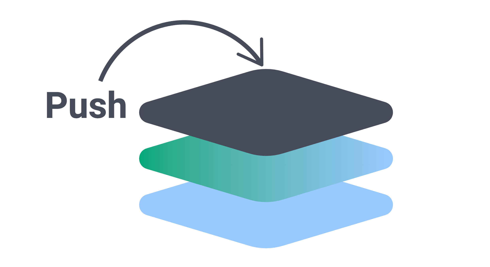
从栈中移除元素被称为“出栈（pop）”操作。当我们将元素从栈顶移除时，我们说我们将元素“弹出（pop）”栈。
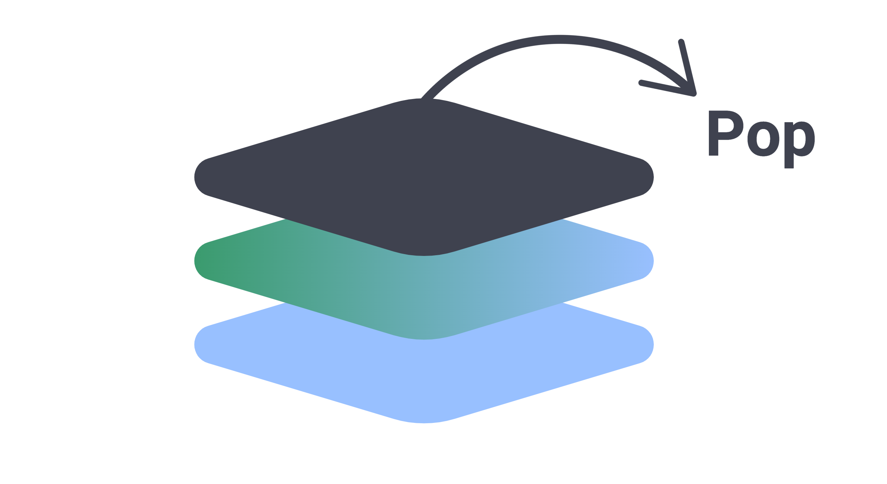
你可以看到我们实际上不在栈底执行任何操作，但我们保留它作为参考。
入栈和出栈操作的时间复杂度通常是 O(1)，即常数时间复杂度。
当你将元素压入栈时，该元素被简单地添加到栈顶。
当你从栈中弹出元素时，栈顶的元素被移除。
因此，无论栈的大小如何，执行这些操作所需的时间都是恒定的。
入栈和出栈操作的空间复杂度通常是常数 O(1)。这意味着无论栈的大小如何，执行这些操作所需的内存量都是恒定的。
既然你对栈有了更多了解，让我们来学习队列。
队列是一种先进先出（First-in, First-out, FIFO）的线性数据结构。这意味着第一个添加到队列中的元素将是第一个被移除的元素。
队列有两个端：队头（front）和队尾（back）。
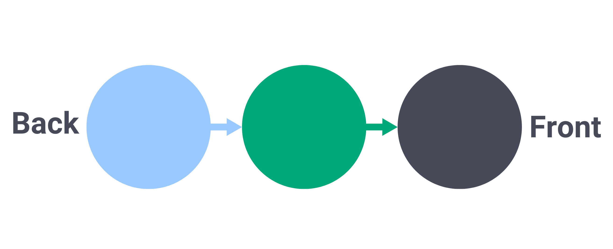
元素被添加到队列的尾部，从队列的头部移除。
你可以把队列想象成在超市等待结账的一排人。排在最前面的人是第一个去收银台结账的人，而新来的人则在队尾加入队伍。
在队列的上下文中，添加和移除元素的操作也有特殊的名字。
向队列的尾部添加元素被称为“入队（enqueue）”操作。
在入队操作中，新元素被添加到队列的末尾，成为队列的末尾。
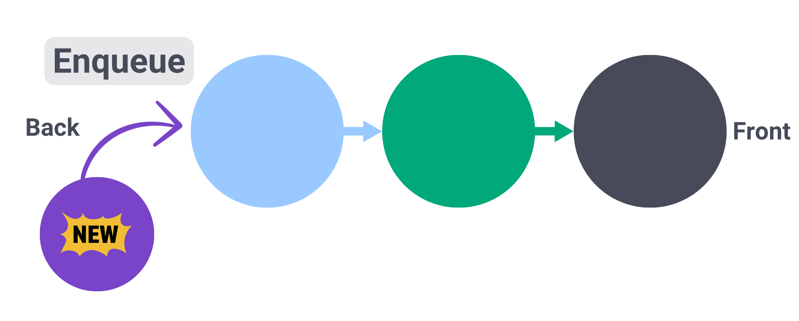
从队列的头部移除元素被称为“出队（dequeue）”操作。
在出队操作中，队列头部的元素被移除，下一个元素成为新的队头。
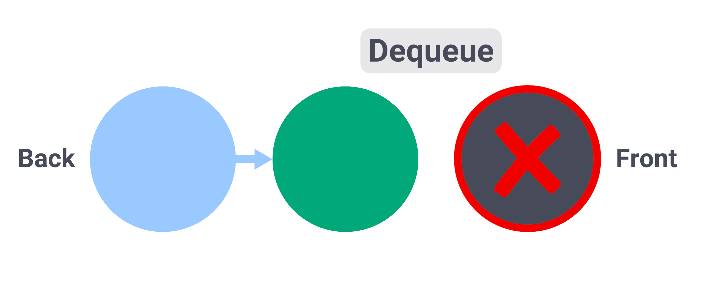
入队和出队操作的时间复杂度是 O(1)，即常数时间。无论队列的大小如何，执行这些操作所需的时间都是恒定的。
入队和出队操作的空间复杂度通常是常数 O(1)。这意味着无论队列的大小如何，执行这些操作所需的内存量都是恒定的。
栈和队列是计算机科学中用于组织和管理元素的数据结构。理解它们对于在各种编程应用中构建高效的算法至关重要。
8.1.5 单向链表是如何工作的？它与双向链表有什么不同？
链表（Linked List）是一种线性数据结构，其中每个节点都连接到序列中的下一个节点。
这些连接创建了一个看起来像节点链的数据结构，其中每个节点存储数据以及对链表中下一个节点的引用。
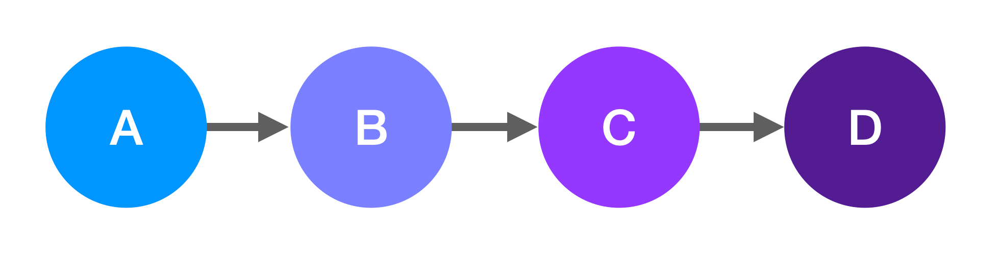
我们使用这些引用从第一个节点移动到下一个节点，以此类推。
链表通常用于实现其他数据结构，例如栈、队列和双端队列。它们也可以用于实现基本的图算法，例如深度优先搜索和广度优先搜索。
单向链表
单向链表是一种链表，其中每个节点都连接到序列中的下一个节点。
每个节点通过存储对下一个节点的引用来连接到下一个节点。
每个节点的单个引用允许你单向遍历链表，从头到尾。
搜索只能向前移动，不能向后移动。
在此示例中，你将从头节点（Head Node）开始，即节点 A。
头节点是链表中的第一个节点。
在单向链表中，头节点通常是唯一可以直接访问的节点。当你试图找到特定节点时，搜索过程将从这里开始。
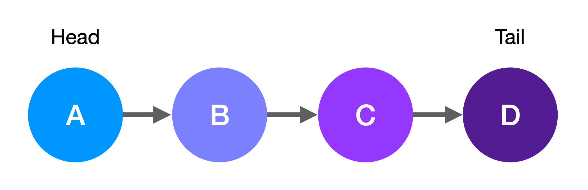
遍历过程将从节点 A 开始，然后继续到节点 B，然后是节点 C，最后是节点 D（尾节点）。如果你在代码中实现了特定逻辑，它也可能在此之前停止。
尾节点（Tail Node）是最后一个节点。它用于确定过程何时到达链表的末尾。
插入节点
关于链表的一件好事是它们没有固定大小。它们可以根据需要通过简单地更新节点之间的连接来扩展或缩小。
你可以在链表的开头、中间和末尾插入节点。
链表不一定需要以特定顺序存储节点。顺序将由节点之间的连接决定。
然而，如果你确实需要为你的特定用例保持节点的特定顺序，你可以通过在代码中实现该逻辑来实现，你实现的标准将确定节点是在开头、中间还是末尾插入。
要在链表的开头插入节点，你只需要在新节点和曾经是头节点的节点之间创建一个连接，并使新节点成为头节点。
在此示例中，我们在开头插入节点 E，并使这个新节点成为链表的头节点。
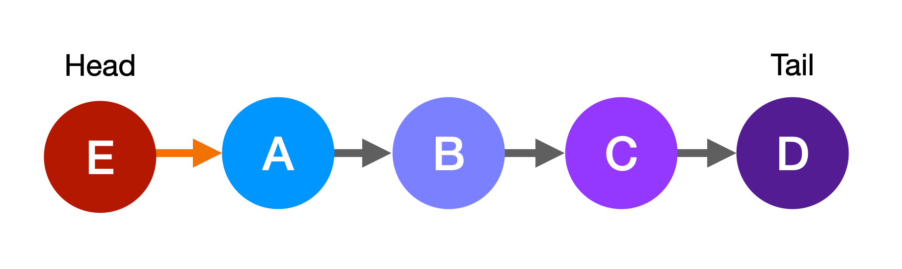
在链表开头插入节点具有常数时间复杂度 O(1)，因为它只需要更新对头节点的引用以及新头节点和序列中下一个节点之间的连接。
在此示例中，我们将节点 E 插入链表的开头。这将正常工作。但如果我们想保持链表按字母顺序排序，节点 E 将不得不插入链表的末尾。
要在链表的末尾插入节点，首先你需要到达末尾，然后添加一个连接到新节点，使其成为新的尾节点。
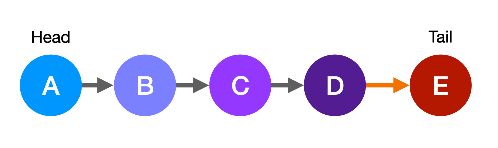
此操作具有线性时间复杂度 O(n)，其中 n 是链表中存储的节点数量，因为首先你需要到达链表的末尾以进行插入，这将需要从一个节点移动到下一个节点，以此类推，直到到达末尾。
如果节点必须插入链表的中间，节点之间的连接也必须更新。序列中的前一个节点应该连接到新节点，新节点应该连接到下一个节点，如下图所示。
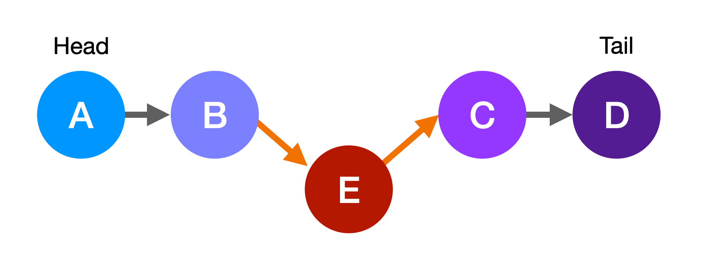
插入操作具有常数空间复杂度 O(1)，因为插入新节点只需要创建它并更新节点之间的连接。此操作不依赖于链表本身的大小。
删除节点
正如你可以插入节点一样，你也可以从链表的开头、中间和末尾删除它们。
要从开头删除节点，你需要更新对头节点的引用，它应该是序列中的下一个节点。
此操作具有常数时间复杂度 O(1)，因为它只需要更新链表对头节点的引用。
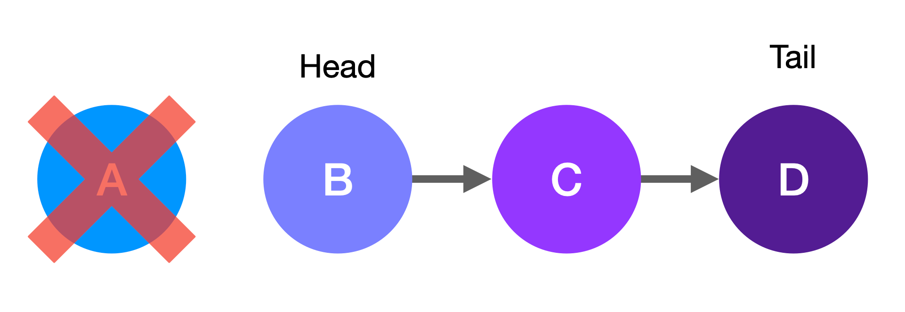
要从链表中间删除节点，你需要更新前一个节点的引用，以将其连接到序列中的下一个节点，在它们之间形成一种“桥”，如你在此图中所见。
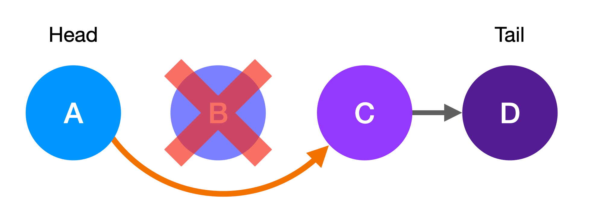
这将从连接序列中删除你想要删除的节点（在此情况下是节点 B），因此下次你遍历时将无法到达它。
要从链表末尾删除节点，你需要删除前一个节点的连接，并使此节点成为新的尾节点。现在链表将在新的尾节点处结束。
此操作具有线性时间复杂度 O(n)，因为你首先必须到达链表的末尾。
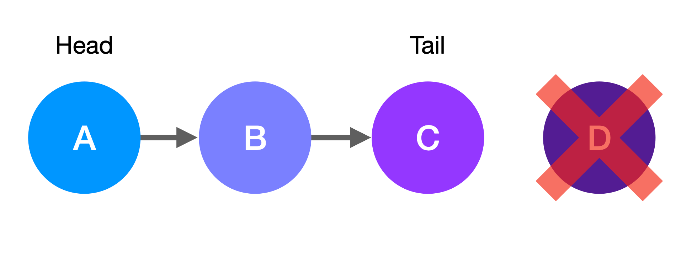
删除操作具有常数空间复杂度 O(1)，因为删除节点不需要额外的内存。
双向链表
既然你对单向链表有了更多了解，让我们来谈谈双向链表。
在双向链表中，每个节点存储两个引用：一个对下一个节点的引用和一个对序列中前一个节点的引用。
这意味着双向链表可以在两个方向上遍历。
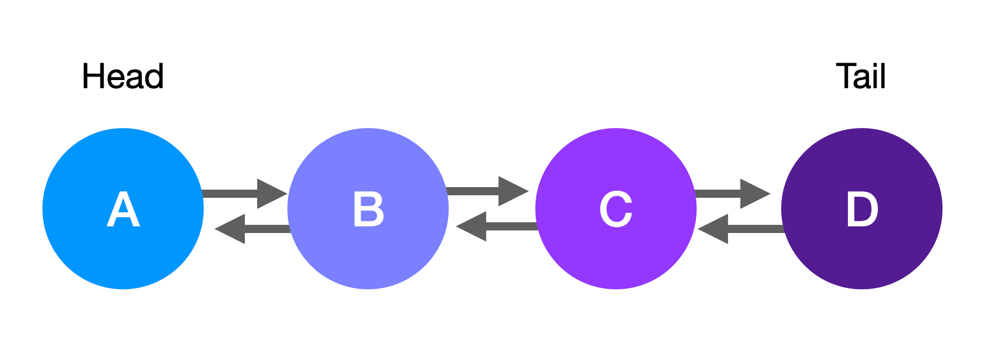
在这种类型的链表中，通常也会在链表本身中保留对尾节点的引用，以便在必要时从末尾开始遍历。
听起来很棒，对吧？它们比单向链表更灵活。
然而，双向链表确实比单向链表需要更多的内存，因为每个节点存储两个引用而不是一个。
这是你在为你的项目选择正确的数据结构时应该记住的事情。
这是一个要权衡的事。
插入和删除操作的工作原理完全相同。唯一的区别是，现在你需要更新每个节点的两个引用，并跟踪对尾节点的引用，以便非常高效地在双向链表末尾插入元素，并在必要时从后面开始遍历过程。
单向和双向链表是计算机科学中用于以顺序方式存储和操作元素的基本数据结构。理解它们的区别对于为你的特定应用选择正确的一个至关重要。
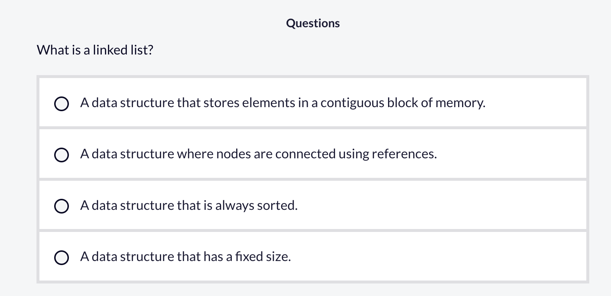
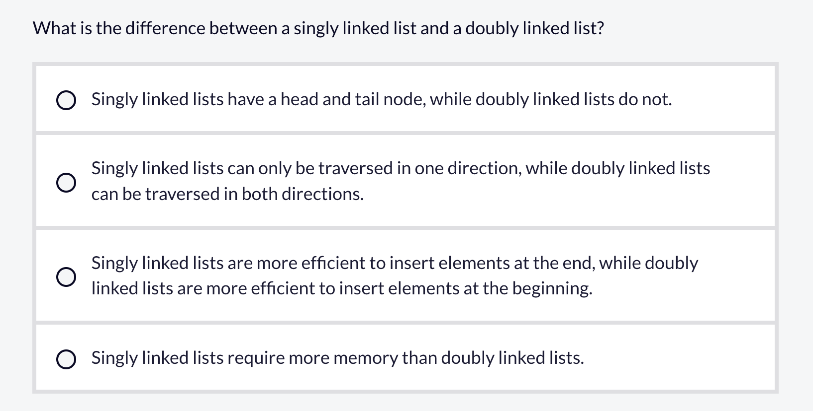
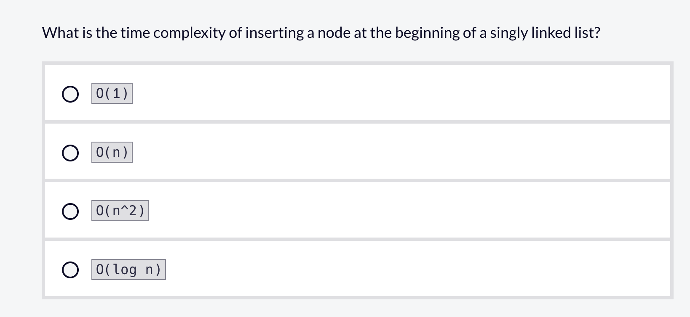
8.1.6 映射（Maps）、哈希映射（Hash Maps）和集合是如何工作的？
在本节课中，我们将介绍映射（Maps）、哈希映射（Hash Maps）和集合（Sets）。但在开始之前，让我们先定义一下抽象数据类型（Abstract Data Types）。
抽象数据类型（ADT）是对数据类型的概念性表示，包括可以在数据上执行哪些操作以及数据的属性。
抽象数据类型就像蓝图，它们描述了可以执行哪些操作，而不是如何执行它们。它们将接口与操作的实际实现分离开来。
映射是一种以非常特定且高效的方式管理键值对（key-value pairs）及其操作的抽象数据类型。
在映射中，每个值都与一个特定的键相关联。
映射的一个关键特征是每个键必须是唯一的。这种唯一性允许进行直接查找，从而使检索信息的过程更加高效。
只需要键是唯一的，值可以重复。
映射抽象数据类型还定义了重要的操作，例如插入键值对、获取与键关联的值、更新与键关联的值、移除键值对以及检查映射中是否存在某个键。
它实际上并没有指定这些操作应该如何执行，它只是将它们作为数据类型可用的操作的一部分列出。
哈希映射，也称为哈希表，是映射抽象数据类型的的具体实现。
哈希映射使用一种称为“哈希（Hashing）”的技术来非常高效地执行常见操作。
哈希本质上是通过使用哈希函数为每个元素生成一个哈希值来工作的。
哈希值是基于键值对的键生成的，它用于计算底层数组中的索引，底层数组是存储键值对的实际数据结构。
但你可能会问自己：如果两个键导致相同的索引会发生什么？
哈希映射通过巧妙的策略来解决这些冲突。
一种选择是使用“链地址法（Chaining）”策略，其中每个数组索引指向一个链表（另一种数据结构），所有具有相同索引的元素都存储在该链表中。
另一种策略是使用“开放寻址法（Open Addressing）”，它涉及基于预定义的搜索序列在数组中搜索下一个可用的索引。
哈希映射的平均情况时间复杂度对于插入、检索和删除键值对操作是“常数时间”O(1)。
这些操作的最坏情况时间复杂度是“线性时间”O(n)，当发生许多哈希冲突时会发生这种情况，因此必须多次应用冲突解决策略。
插入到哈希映射中的空间复杂度在平均情况下是常数 O(1)，即存储新对所需的恒定量的内存。然而，在最坏情况下，由于底层数组的调整大小操作，它可能具有线性空间复杂度 O(n)。通常，删除元素具有常数空间复杂度 O(1)。
这将哈希表变成类似于线性数据结构的东西，其中必须扫描 n 个元素才能找到目标键。然而，如果正确实现哈希映射，这种情况相对较少。
Python 的字典在底层是作为哈希映射实现的。
要创建一个 Python 字典，你只需要在花括号内编写键值对，并用逗号分隔它们。每个键应该用冒号与其对应的值分隔。
示例代码
my_dictionary = {
'A': 1,
'B': 2,
'C': 3
}在此代码中，‘A’ 是键，1 是值：
示例代码
'A': 1或者，你可以使用 dict()：
示例代码
my_dictionary = dict(A=1, B=2, C=3)你可以通过其对应的键获取值：
示例代码
my_dictionary['A'] # 1你也可以更新与键关联的值：
示例代码
my_dictionary['A'] = 4你可以移除键值对：
示例代码
del my_dictionary['A']你还可以检查一个键是否在字典中（或不在）：
示例代码
'C' in my_dictionary你可以调用这些方法分别获取字典的键、值和项。
示例代码
my_dictionary.keys()
my_dictionary.values()
my_dictionary.items()太好了。既然你对映射和哈希映射有了更多了解，让我们来谈谈集合。
集合是唯一元素的无序集合。
让我们将这个概念分解为其关键组件：
集合是无序的。集合的元素不以任何特定顺序存储，因此你不能通过索引访问它们。
集合只包含唯一元素。如果你尝试两次添加相同的值，将只保留一个该值的副本。
它们类似于数学中的集合，它们实现了相同的集合操作，如交集、并集和差集。
集合的一个主要优点是它们保证元素将是唯一的（无重复）。这就是为什么它们经常用于从列表和其他数据结构中删除重复项。
它们也是动态的。它们可以调整以适应当前存储的元素数量。这使它们相当强大。
添加、移除、获取集合长度以及检查元素是否在集合中的平均情况时间复杂度是“常数时间”O(1)，这是非常高效的。
由于集合是作为哈希表实现的，添加、移除和检查成员资格的最坏情况时间复杂度是“线性时间”O(n)。当发生多个哈希冲突时可能会发生这种情况，将哈希表变成类似于线性数据结构的东西，其中需要 n 次扫描才能找到键。
在空间复杂度方面，在平均情况下，插入一个元素将具有常数复杂度 O(1)，因为一个新唯一元素需要恒定量的内存。然而，在最坏情况下，底层数组的调整大小操作可能需要线性空间复杂度 O(n)。通常，移除一个元素将具有常数空间复杂度 O(1)。
Python 有一个内置的集合数据结构，你可以在程序中使用它来处理集合。
在底层，Python 集合是使用仅存储键而不存储任何关联值的哈希表实现的。
集合只能存储不可变数据类型的对象，因为它们的哈希值始终保持不变。相比之下，可变对象的哈希值在它们被改变时可能会改变。这就是为什么它们不能成为集合的一部分。如果存储在集合中的对象的哈希值发生变化，程序将无法再找到它。
要在 Python 中定义一个集合，你只需要用花括号将元素括起来，并用逗号分隔它们：
示例代码
numbers = {1, 2, 3, 4}要创建一个空集合，你可以调用 set()：
示例代码
numbers = set()请注意，如果你使用空花括号，这将自动创建一个 Python 字典，而不是集合，因此你必须调用 set() 函数来创建一个空集合。
你可以使用 .add() 方法向集合中添加一个元素：
示例代码
numbers.add(5)你也可以使用 .remove() 方法从集合中移除元素：
示例代码
numbers.remove(5)如果未找到元素，这将引发 KeyError。但如果你不希望在这种情况下引发错误，你可以改用 .discard() 方法。
.pop() 方法返回集合中的一个任意元素，而 .clear() 方法从集合中移除所有元素。
你可以使用 in 运算符测试一个元素是否在集合中：
示例代码
5 in numbersPython 还支持集合操作，包括并集、差集、对称差集和交集，你可以使用这些方法执行：
示例代码
set_a = {1, 2, 3, 4}
set_b = {2, 3, 4, 5, 6}
set_a.union(set_b)
set_a.intersection(set_b)
set_a.symmetric_difference(set_b)
set_a.difference(set_b)或使用它们的等效运算符：
示例代码
set_a | set_b
set_a & set_b
set_a ^ set_b
set_a - set_b添加、移除和测试成员资格的平均情况时间复杂度是“常数时间”O(1)。
由于哈希映射的最坏情况冲突场景，这些操作的最坏情况时间复杂度是“线性时间”O(n)。
你还可以检查一个集合是否是另一个集合的子集或超集：
示例代码
set_a.issubset(set_b)
set_a.issuperset(set_b)总的来说，当你需要存储唯一项的集合并频繁检查项的存在时，应该使用集合。
映射、哈希映射和集合是为高效的数据组织和检索而设计的强大数据结构。它们每一个都有其独特的特征和用例。作为开发人员，你需要为你的项目选择最佳的一个。
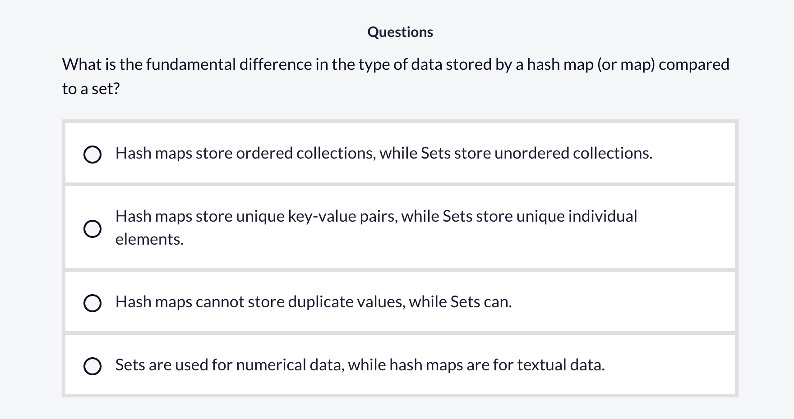
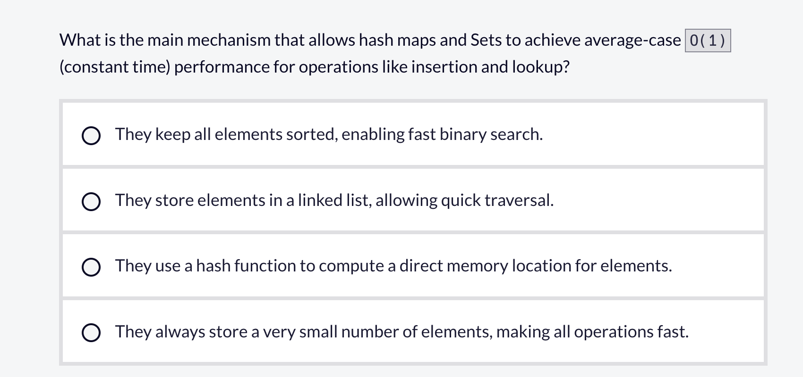
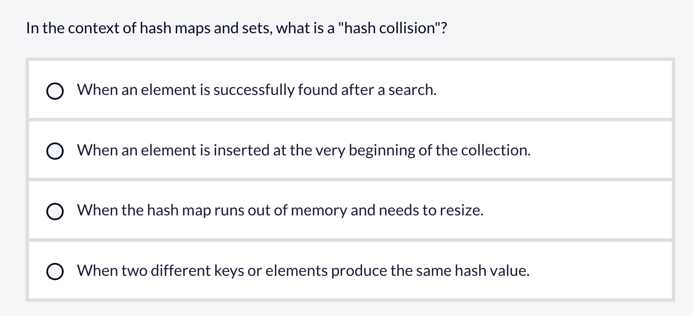
8.2 练习
8.2.1 实现一个Hash Table
1 定义一个名为HashTable的类，它有一个collection属性，collection值初始化为空字典。
2 HashTable类应该有四个方法：hash, add, remove, 和 lookup.
3 hash方法，接受一个字符串，返回该字符串对应的hash值，该值通过将字符串中每个字符的 Unicode（ASCII）码值相加计算得到。可以使用 ord 函数来完成这一计算。
4 add方法，接受key，value作为参数，key用来计算hash值，value是要存储的值。如果多个键产生了相同的哈希值，它们对应的键值对应当存储在同一个哈希值下已有的嵌套字典中。
5 remove方法，接受key作为参数用于计算hash，判断它是否在collection里面，移除相应的key-value对，如果key不存在，不要报错也不要移除任何内容。
6 lookup方法，接受key作为参数，计算key的hash，返回相应的value。如果key不存在，则返回None。